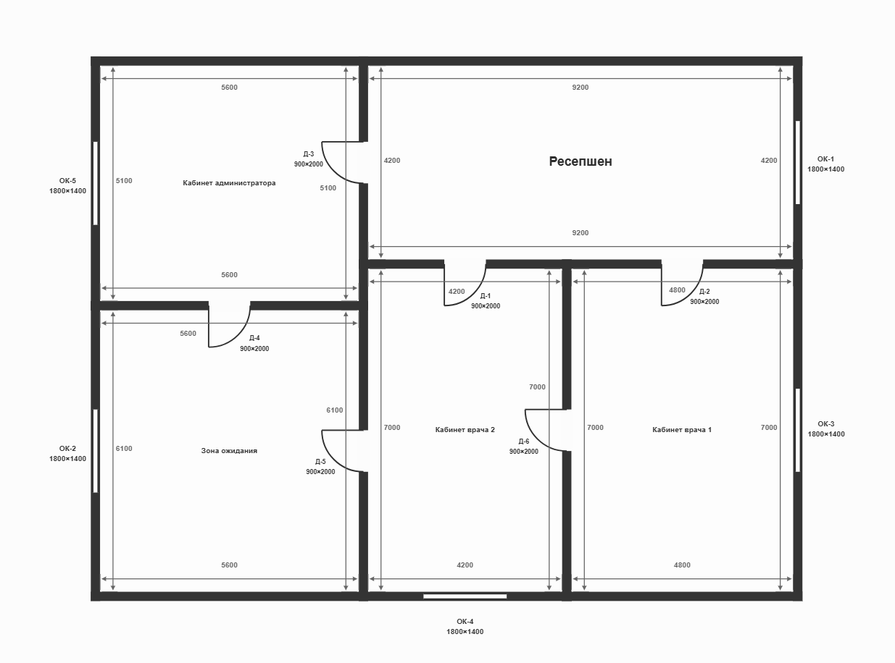
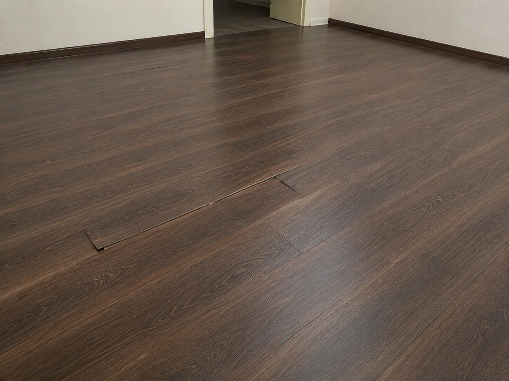
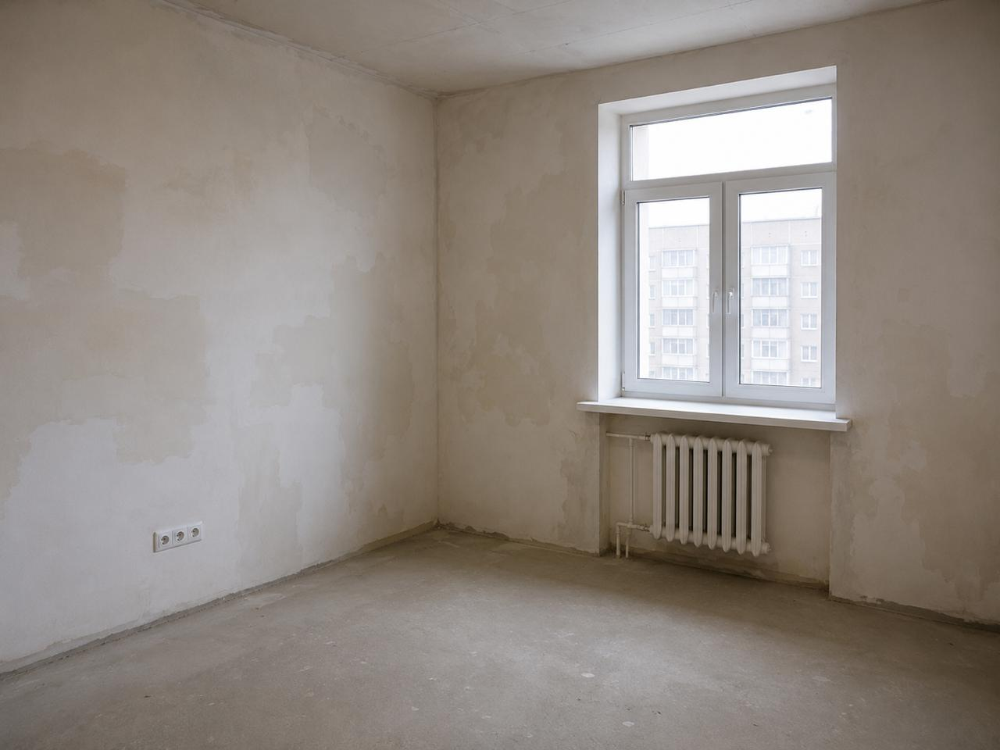

Не подставлять отсутствующие размеры
Если на плане нет высоты, процесс останавливается и запрашивает значение у пользователя.
Реальные запуски · 17–18 июля 2026
Пошаговый разбор реального запуска: действия пользователя, работа tools и субагентов, источник контрольных цен и проверяемые результаты каждого этапа.
Это предварительная автоматизированная проверка, а не заключение строительного эксперта.
Задача
Языковая модель хорошо читает изображения и понимает названия работ, но арифметика, цены и происхождение каждого значения должны иметь отдельную проверяемую границу.
Если на плане нет высоты, процесс останавливается и запрашивает значение у пользователя.
Каталог поступает из отдельного MCP-сервера и сохраняется вместе с данными о происхождении.
JSON-ответы субагентов проходят проверку по схеме, а расчёты выполняются в Python.
Устройство системы
Основная LLM распределяет задачи между изолированными компонентами.
Понимает запрос, ведёт диалог и выбирает следующий разрешённый этап.
Импорт, контроль состояния, проверка данных, расчёты и запись артефактов.
Список tools ↗Отдельные LLM-задачи зрения и смысла получают только минимальный пакет.
Роли субагентов ↗Возвращает семь работ и контрольные цены; LLM не формирует их самостоятельно.
Настройка MCP ↗Запись показывает обычный диалог и часть внутреннего управления процессом: вызовы tools, технические ответы субагентов и служебные сводки. Это особенность текущего интерфейса Ouroboros; для демонстрации мы её не изменяли. Итогом считаются только проверенные обзоры, итоговые сводки и сохранённые файлы.
Демонстрационные данные

План: медицинский офис из пяти помещений

Кадр показывает, как Photo Vision фиксирует наблюдаемый дефект без необоснованной привязки к помещению.

Другое состояние объекта проверяет, что наблюдения двух кадров обрабатываются раздельно и не смешиваются.
Сценарий 1 · полный аудит
Подготовка · исходник 00:07–01:03
Скилл включён и прошёл проверку, MCP-tool доступен, а сервер запущен локально. Пользователь заранее показывает план, смету с намеренными ошибками и ZIP с фото.
Скилл подключён и прошёл проверку
Запуск · исходник 01:19–01:45
create_case создаёт изолированное состояние проверки.
import_documents принимает подготовленные план и XLSX, проверяет файлы,
сохраняет копии и нормализует строки сметы.
Пользователь прикрепляет план и смету
Plan Vision · исходник 01:59–04:18
Plan Vision запускается с пустой памятью и получает лишь изображение и
plan_id. Он не видит смету, цены и историю диалога, поэтому
распознанная геометрия не зависит от данных Excel.
save_geometry по JSON-схемеЗапуск изолированного Plan Vision
Проверка пользователем · исходник 04:48–06:03
Обзор содержит размеры помещений и привязку дверей и окон. Общий проём
имеет один element_id у смежных комнат и не задваивается в итоге.
Высоты на плане нет — скилл не подставляет «типовое» значение.
Ouroboros Высота помещений не найдена.
Пользователь Высота всех помещений — 2,8 метра.
Ouroboros Геометрия, ревизия 2. Проверьте ещё раз.
Пользователь Геометрия верна.
Недостающая высота и явное исправление
Цены · исходник 06:03–06:19
mcp_construction_prices__get_supported_works возвращает семь
работ, единицы и цены. save_price_catalog валидирует ответ и
сохраняет его SHA-256. Если MCP недоступен, аудит останавливается.
MCP возвращает поддерживаемые работы и цены
Сопоставление + Python · исходник 06:40–08:46
Mapping-субагент связывает «Монтаж напольного покрытия» из сметы с
«Устройством пола» из MCP. Затем run_audit считает площади,
плинтус и уникальные проёмы, сравнивает объёмы, единичные цены и стоимость строк.
LLM не участвует в арифметике. Каждая формула сохраняется в трассировке расчётов.
Открыть расчётную трассировкуЗапуск Mapping-субагента
Фото · исходник 08:45–10:52
Ouroboros предлагает загрузить ZIP или написать «без фото». Для каждого кадра параллельно запускается отдельный субагент. Он получает одно фото, семь работ и номера строк — но не название помещения и не другие кадры.
Пользователь выбирает фотоанализ и загружает ZIP
Проверка результатов · исходник 12:50–22:15
Результат второго фото не проходит проверку по схеме — повторяется только соответствующий субагент. Аналитический субагент затем получает уже проверенные факты и предлагает гипотезы, не меняя найденные расхождения и расчёты.
Его первый ответ также отклоняется за внутренние термины и недоказанную привязку фото к комнате. Основная LLM не исправляет JSON вручную: повторный запуск получает точные причины ошибки.
В этом фрагменте особенно заметны служебные задачи Ouroboros, описанные выше.
Валидация гипотез ↗Ответ по photo_002 отклонён; повторяется только этот этап
Результат · исходник 22:55–24:12
После отчёта Ouroboros отдельно предлагает контрольную XLSX. Она создаётся только по явной просьбе пользователя и содержит 31 строку.
Итоговая сводка аудита в Ouroboros
Проверяемые результаты
Видео показывает интерфейс, а репозиторий содержит фактические выходные файлы того же запуска.
Описание порядка появления файлов: ARTIFACTS.md ↗. Публичная санитизация: SANITIZATION.md ↗.
Сценарий 2 · только план
Вместо сравнения с документом скилл создаёт новую предварительную XLSX с нуля.
Вход · исходник 00:33–00:58
Пользователь просит сформировать смету по плану. create_case
создаёт новый отдельный запуск, а import_plan сохраняет изображение. Фиктивная
исходная XLSX не создаётся.
Запрос: сформировать смету по одному плану
Распознавание плана · исходник 01:12–04:22
Изолированный Plan Vision снова получает только план. Он извлекает пять помещений общей площадью 164,36 м², шесть уникальных дверей и пять окон. Tools проверяют ответ и показывают полный обзор геометрии.
Артефакты сценария «только план» ↗Запуск Plan Vision и view_image
Диалог · исходник 04:46–06:23
Пользователь снова задаёт отсутствующую высоту 2,8 м, проверяет ревизию 2 и отдельным сообщением подтверждает геометрию. Служебное восстановление состояния между сообщениями — внутренняя работа Ouroboros, а не расчёт скилла.
Пользователь задаёт высоту 2,8 м
MCP + XLSX · исходник 06:29–07:41
MCP возвращает канонические работы и цены. Mapping не нужен: пользовательских
названий из исходной сметы нет. Ouroboros спрашивает разрешение, затем
generate_estimate создаёт XLSX детерминированно.
Стены считаются без проёмов, плинтус — без ширины дверей, а шесть уникальных дверей добавляются одной строкой на весь объект.
MCP-каталог сохранён; Ouroboros спрашивает согласие
Два входа — два результата